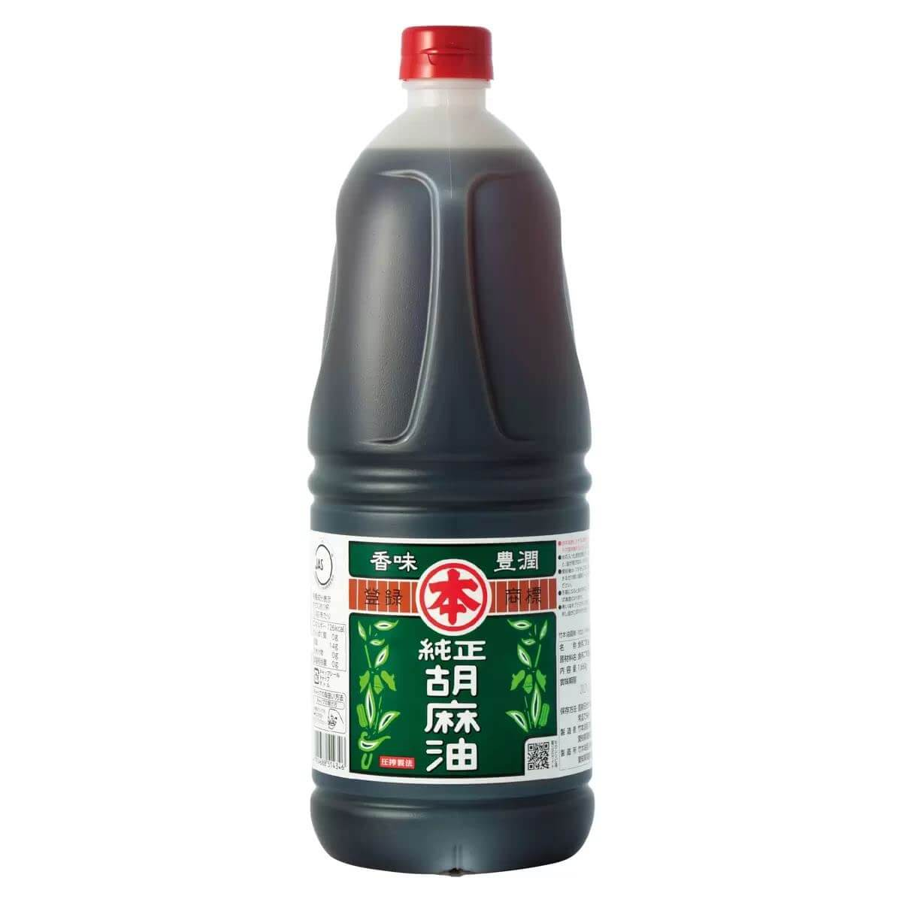
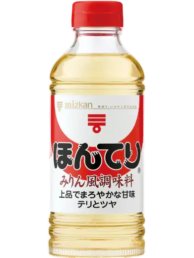
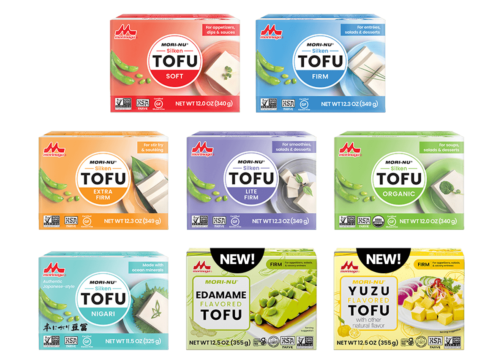

Riz
-
-Tous: Riz 100%
-
Parfait pour les voyageurs, juste besoin d'un micro-ondes ou d'eau bouillante:
-Riz instantané: Iris Oyama (Kioko)

pour la cuisine
-
Yamasa - Sauce Soja Yuki Maru-Daizu Shoyu

-
Vinaigre de riz

-

-

-
Huile de sesame

-

-
Mirin
-

-
Tofu- Morinaga: tout les produits avec le signe KSA

-
Nori: Nous recommandons d'acheter du Nori avec un tampon de kasherout si possible.
seulement le Nori 100% est authorisé MAIS ⚠ nécessite une verification attentivement chaque feuille de chaque coté, à la lumière à la recherche de micro écrevisse ou micro crustacées.
Processus explique Ici .

-
Kirkland: Vous pouvez trouver du nori avec le logo Star-K au supermaché Costco

Boissons
-
Sake: Tout le sake "Junmaishu" "純米酒"
-
Beer: Toutes les Bières (生ビール) non aromatisées sont kasher

-
Lait: ⚠ Uniquement du chalav nochri (lait non surveillé):
100% milk 牛乳/成分無調整 生乳100％ exemple:

-
Caffé: boss 100% black coffee

-
Thé: Thé pur 生茶:
thé d'Orge, thé vert